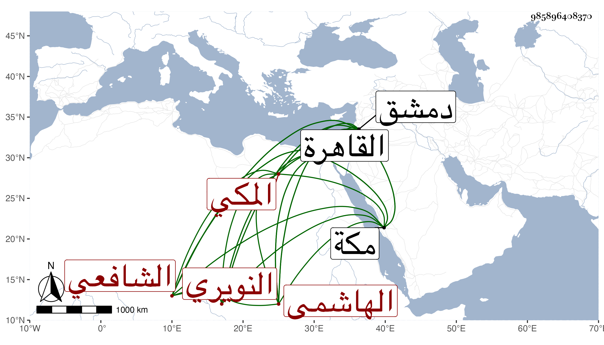

0902Sakhawi.DawLamic.ITO20230111-ara1.EIS1600.985896408370
Biography ID: 985896408370
236
أبو بكر بن محمد المدعو بأبي اليمن بن محمد بن علي بن أحمد بن عبد العزيز الفخر بن القاضي الأمين أبي اليمن الهاشمي النويري المكي الشافعي الماضي اخوته علي وعمر ومحمد وأبوهم ويعرف بابن أبي اليمن . ولد في جمادى الأولى سنة اثنتين وأربعين وثمانمائة بمكة وأمه أم كلثوم ابنة القاضي أبي عبد الله محمد بن علي النويري وحفظ القرآن وصلى به التراويح بمقام المالكية سنة أربع وخمسين والعمدة والمنهاج وغيرها وعرض وسمع المراغي وأجاز له الزين الزركشي وابن ناظر الصاحبة وابن الفرات وطائفة ودخل القاهرة ودمشق وسمع في سنة إحدى وستين على العلم البلقيني جزء الجمعة ثم رجع لمكة في التي تليها ثم عاد إلى القاهرة . ومات سنة ثلاث أو أربع وسبعين بدمشق مطعونا .
